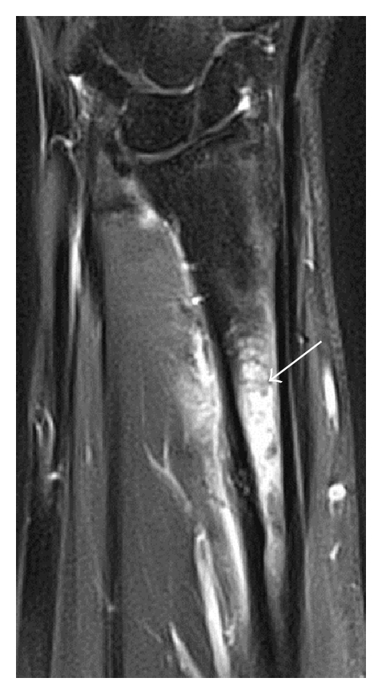

Ficha del catálogo
Fractura por estrés
- Sistema
- Óseo
- Modalidad
- RM
- Región
- Pierna y pie
- Dificultad
- Intermedio
Se produce cuando un hueso normal se somete a cargas repetitivas que superan su capacidad de reparación, como ocurre en corredores, bailarines y reclutas militares. También existe la fractura por insuficiencia, en la que una carga fisiológica actúa sobre un hueso debilitado por osteoporosis. El dolor mecánico progresivo con radiografía inicial normal es la presentación típica.
Técnica
Radiografía simple en dos proyecciones como primer paso, seguida de resonancia magnética con secuencias sensibles al líquido y supresión grasa cuando persiste la sospecha.
Qué observar
- Banda lineal de baja señal perpendicular a la cortical rodeada de edema medular
- Reacción perióstica sólida y fusiforme en la radiografía tardía
- Engrosamiento cortical localizado en la diáfisis de tibia o metatarsianos
- Línea esclerótica transversal sin masa de partes blandas asociada
- Ausencia de destrucción cortical o de masa, que orientaría a tumor
- Localización característica según la actividad del paciente
Hallazgos
Edema óseo focal con línea de fractura intramedular y reacción perióstica adyacente, sin componente de partes blandas.
Perlas
En la radiografía puede no verse nada durante dos o tres semanas y luego aparecer solo la reacción perióstica. El error más peligroso es interpretar esa reacción perióstica aislada como un tumor óseo agresivo y biopsiar sin necesidad.
Diagnóstico diferencial
- Osteoma osteoide
- Presenta nido lucente central y dolor nocturno que cede con antiinflamatorios.
- Osteosarcoma
- Masa de partes blandas, destrucción cortical y matriz osteoide agresiva.
- Osteomielitis
- Fiebre, colecciones y realce difuso con trayecto fistuloso.
Simuladores
- Reacción perióstica tumoral
- Periostitis por sobrecarga sin fractura
- Infarto óseo en resolución
Por modalidad
- RX
- Normal al inicio, muestra callo o esclerosis en fases tardías
- TC
- Demuestra la línea de fractura cortical con precisión
- RM
- Prueba de elección por su detección precoz del edema
Protocolo
Radiografía dirigida a la zona sintomática. Resonancia con cortes en dos planos y secuencias con supresión grasa si el estudio simple es negativo.
Clasificación
Se distingue entre fractura por fatiga, sobre hueso sano con carga excesiva, y fractura por insuficiencia, sobre hueso debilitado con carga normal.
Errores frecuentes
- Interpretar la reacción perióstica como lesión tumoral
- Repetir radiografías en lugar de pasar a resonancia ante clínica persistente
- No preguntar por cambios recientes en la carga de entrenamiento

fractura por estres sobrecarga tibia metatarsiano corredor insuficiencia edema oseo